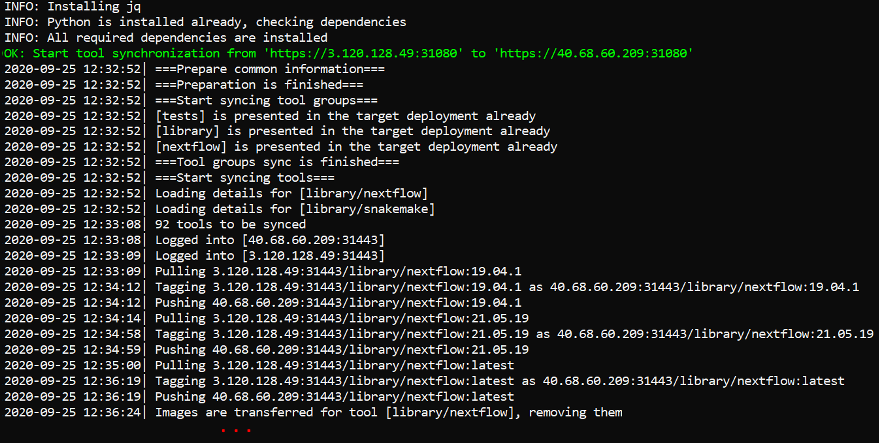

Environments synchronization
In some cases, you may need to synchronize two different environments of the Cloud Pipeline.
Special routine in the pipectl utility shall be used for that - pipectl sync.
It allows to synchronize from the source environment to the destination one the following objects:
- users / user groups / user roles
- docker registry / tool groups / tools
Synchronization can be performed with or without synchronization of attributes (metadata) for the specified Platform objects.
During the synchronization, changes are being performed only in the destination environment, the source environment remains the same.
Prerequisites
For the correct work, launch pipectl sync utility only at Linux machine, in the separate terminal, not from the run.
If you are going to synchronize tools between environments, Docker shall be installed at the machine as well.
Users synchronization process
The format of the command to synchronize users between environments:
./pipectl sync --users --source-url <source_url> --source-token <source_token> --target-url <target_url> --target-token <target_token>
Note: the command above shall be performed with admin rights in the the same directory where pipectl utility was downloaded.
Details:
<source_url>is the source environment address. Shall be specified in the following format:<protocol>://<IP/hostname>:<port>(e.g.https://cloud-pipeline.epam.com:443)<source_token>is the source environment's access token. It can be obtained via the GUI (at the "Pipe CLI" settings form) or viapipe tokenCLI command<target_url>is the destination environment address. Shall be specified in the following format:<protocol>://<IP/hostname>:<port>(e.g.https://cloud-pipeline-dev.epam.com:443)<target_token>is the destination environment's access token. It can be obtained via the GUI (at the "Pipe CLI" settings form) or viapipe tokenCLI command
During the --users synchronization, the following processes are being performed:
- Roles/groups synchronization
- roles/groups from the source environment, that are missing in the destination environment, are being created in the destination environment ("blocked" statuses are being set according to the source environment as well)
- for roles/groups from the destination environment matching roles/groups from the source environment, their blocked status are being overridden:
- if a group/role is blocked in the source environment - that status will be set for the group/role in the destination environment too
- if a group/role is not blocked in the source environment but blocked in the destination environment - that status will be removed in the destination environment
- Users synchronization
- users from the source environment, that are missing in the destination environment, are being created in the destination environment ("blocked" statuses, groups/roles lists are being set according to the source environment)
- for users from the destination environment matching users from the source environment, their blocked statuses are being overridden:
- if a user is blocked in the source environment - that status is being set for the user in the destination environment too
- if a user is not blocked in the source environment but blocked in the destination environment - that status will be removed in the destination environment
- for users from the destination environment matching users from the source environment, their groups/roles lists are being merged with the corresponding lists of the source environment
- Metadata synchronization
- by default, metadata (attributes) for users/groups/roles are being created/merged too. For users/groups/roles from the destination environment matching users/groups/roles from the source environment, if metadata keys for the source and destination are the same - the values of such metadata will be overridden by the source environment values
- to exclude overriding of the matching metadata, the specific environment variable shall be set before the running of the
pipectlutility -CP_SYNC_USERS_METADATA_SKIP_KEYS:- for that variable, the comma-separated list of users' metadata keys to skip during the synchronization shall be specified
- example of usage:
export CP_SYNC_USERS_METADATA_SKIP_KEYS="ssh_pub,ssh_prv"- to exclude public and private keys merging during the synchronization
Command example:
Example of the output (part):

Tools synchronization process
The format of the command to synchronize tools between environments:
./pipectl sync --tools --source-url <source_url> --source-token <source_token> --target-url <target_url> --target-token <target_token>
Note: the command above shall be performed with admin rights in the the same directory where pipectl utility was downloaded.
Details:
<source_url>is the source environment address. Shall be specified in the following format:<protocol>://<IP/hostname>:<port>(e.g.https://cloud-pipeline.epam.com:443)<source_token>is the source environment's access token. It could be gotten via the GUI (at the "Pipe CLI" settings form) or viapipe tokenCLI command<target_url>is the destination environment address. Shall be specified in the following format:<protocol>://<IP/hostname>:<port>(e.g.https://cloud-pipeline-dev.epam.com:443)<target_token>is the destination environment's access token. It could be gotten via the GUI (at the "Pipe CLI" settings form) or viapipe tokenCLI command
During the --tools synchronization, the following processes are being performed:
- If the default registry is not attached to the destination environment - this will be performed
- Tools groups' synchronization
- if a group doesn't exist in the destination environment registry - a new group will be created with all the properties of a source one
- for tool groups from the destination environment matching tool groups from the source environment, their permissions/OWNER property will be overridden according to corresponding source tool groups' settings (in case, when these settings are different)
- Tools'synchronization
- tools from the source environment, that are missing in the destination environment, will be transferred to the destination environment registry (with their versions, settings, descriptions according to the source environment)
- for tools from the destination environment matching tools from the source environment:
- the same identical versions (that exist in both environments) remain in the destination
- versions from the destination not matching the source ones will be removed
- versions from the source not matching the destination will be transferred to the destination environment registry
- settings and descriptions will be set according to the source environment
- "Symlinked" tools' synchronization
- Metadata synchronization
- by default, metadata (attributes) for tools/tool groups/registry are being created/merged too. For tools/tool groups/registry from the destination environment matching tools/tool groups/registry from the source environment, if metadata keys for the source and destination are the same - the values of such metadata will be overridden according to the source environment values
- to exclude overriding of the matching metadata, the specific environment variable shall be set before the running of the
pipectlutility -CP_SYNC_TOOLS_METADATA_SKIP_KEYS:- for that variable, the comma-separated list of tools' metadata keys to skip during the synchronization shall be specified
- example of usage:
export CP_SYNC_TOOLS_METADATA_SKIP_KEYS="ke1,key2"- to exclude merging of "key1" and "key2" metadata keys during the synchronization
Command example:

Example of the output (part):
